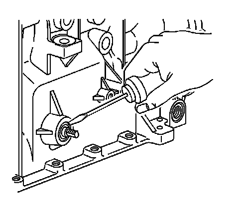
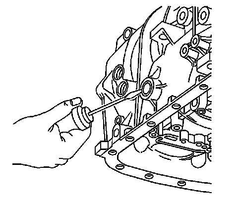
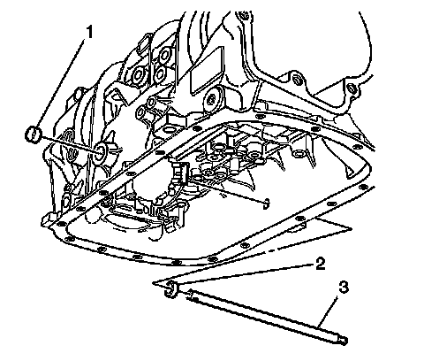
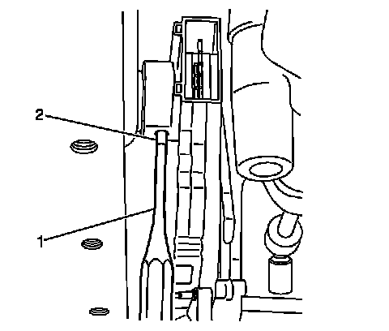
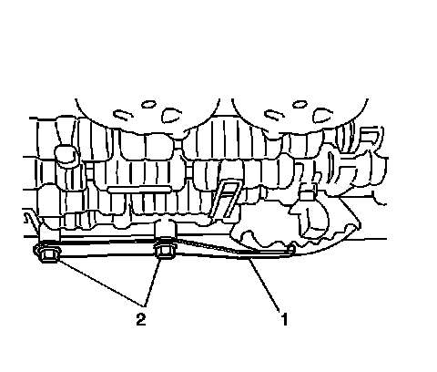
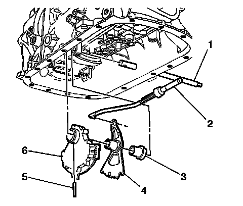
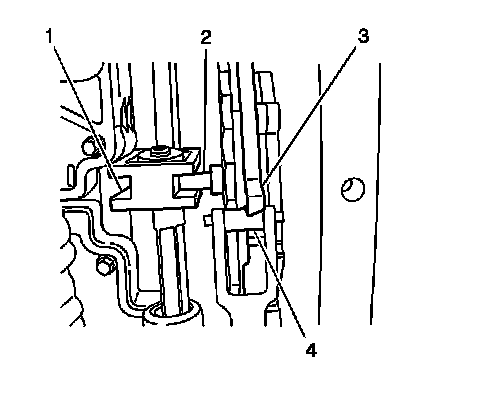
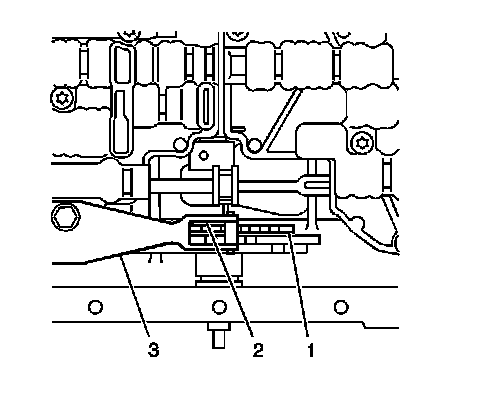
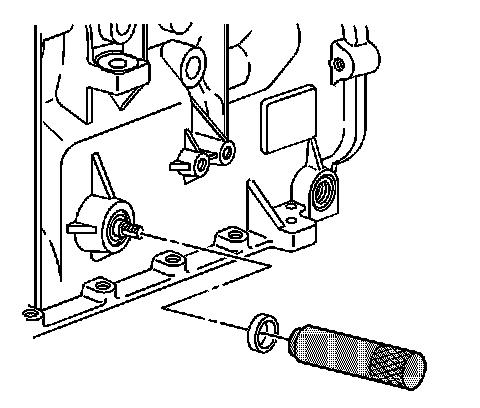
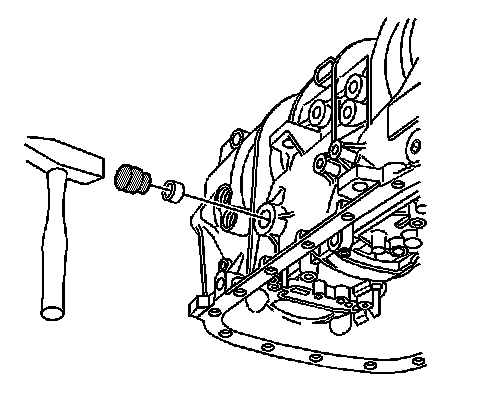

5L40-E/5L50-E - Automatic Transmission
Manual Shift Shaft Position Switch Replacement
Tools Required
J 44767 Seal Installer
Removal Procedure
1. Raise and support the vehicle. Refer to Lifting and Jacking the Vehicle (Service and Repair) .

2. Remove the transmission manual shift shaft nut.
3. Disconnect the shift linkage from the transmission manual shift shaft.
4. Remove the exhaust system. Refer to Exhaust System Replacement (Service and Repair) .

5. Disconnect the propeller shaft coupler (1) from the transmission flange. Refer to Rear Propeller Shaft Replacement (RWD) (Rear Propeller Shaft Replacement (RWD)) .
6. Push the front propeller shaft toward the rear of the vehicle in order to release the propeller shaft coupler (1) from the transmission flange.

7. Secure the front propeller shaft (1) to the shift control lever (3) with a piece of mechanics wire (2).

Important: Replace the shaft seal only if leaking.
8. Using a small screwdriver, remove and discard the shaft seal.

Important: Replace the cup plug only if leaking.
9. Using a small screwdriver, remove and discard the cup plug.

Important: Removal of the transmission from the vehicle is NOT required for removal or replacement of the shift shaft position switch. Remove the transmission from the vehicle and refer to Off-Vehicle Repair for replacement of the manual shift shaft ONLY if replacement of the manual shift shaft (3) is necessary.
10. Remove the transmission fluid pan and filter. Refer to Automatic Transmission Fluid and Filter Replacement (Removal and Replacement) .
11. Disconnect the electrical connector from the manual shift shaft position switch.

12. Using a suitable pin punch (1), remove the manual shift shaft position switch retaining pin (2).

13. Remove the manual shift shaft detent spring (1) and bolts (2).
14. Position a suitable transmission jack under the transmission support.
15. Remove the transmission support from the body ONLY. Refer to Transmission Support Replacement (Transmission Support Replacement) .

16. Using the transmission jack, lower the rear of the transmission only enough to allow the manual shift shaft (1) to clear the vehicle floor pan.
17. Extract the manual shift shaft (1) from the transmission case only far enough to allow removal of the manual shift shaft position switch (6).
18. Remove the manual shift shaft position switch (6), the manual shift shaft detent lever (4), the manual shift shaft assembly spacer (3), and the park pawl actuator (2) as an assembly.
Installation Procedure
1. Install the manual shift shaft position switch (6), the manual shift shaft detent lever (4), the manual shift shaft assembly spacer (3), and the park pawl actuator (2) as an assembly. It may be necessary to push up on the park pawl in order to fully insert the park pawl actuator (2).
2. Fully insert the manual shift shaft (1) into the transmission case.
3. Raise the transmission to its original position.
4. Install the transmission support. Refer to Transmission Support Replacement (Transmission Support Replacement) .
5. Remove the transmission jack.
6. Install the manual shift shaft detent spring (1).
7. Install the control valve body bolts (2) retaining the manual shift shaft detent spring. Do not tighten at this time.

8. Confirm that the manual shift shaft detent lever locating pin (2) is properly engaged with the manual valve link (1).
9. Confirm that the detent spring roller (4) is properly engaged with the manual shift shaft switch (3).
10. Using a suitable pin punch (1). Install the manual shift shaft position switch retaining pin (2).
11. Connect the electrical connector to the manual shift shaft position switch.

12. Install a 0.8 mm spacer (2) between the manual shaft detent lever (1) and the manual shaft detent spring (3).
Notice: Refer to Fastener Notice (Fastener Notice) .
13. Tighten the detent spring bolts.
Tighten the bolts to 11 N.m (97 lb in).
14. Remove the spacer (2).
15. Install the transmission fluid pan and filter. Refer to Automatic Transmission Fluid and Filter Replacement (Removal and Replacement) .

16. If previously removed, install a new shaft seal using J 44767 .
17. Position the seal onto the J 44767 before installing the seal into the transmission case.
18. Carefully slide the seal and tool over the manual shift shaft and insert the seal into the transmission until fully seated

19. If previously removed, install a new cup plug. Lubricate the cup plug with transmission fluid before installation.
20. Insert the cup plug into the transmission until flush with the transmission case.
21. Remove the mechanics wire (2) securing front propeller shaft (1) to the shift control lever (3).
22. Install the propeller shaft coupler (1) to the transmission flange. Refer to Rear Propeller Shaft Replacement (RWD) (Rear Propeller Shaft Replacement (RWD)) .
23. Install the exhaust system. Refer to Exhaust System Replacement (Service and Repair) .
24. Connect the shift linkage to the transmission manual shift shaft.
25. Install the transmission manual shift shaft nut.
Tighten the nut to 9 N.m (80 lb in).
26. Adjust the shift control linkage. Refer to Shift Control Linkage Adjustment (All Wheel Drive) (Shift Control Linkage Adjustment (All Wheel Drive))Shift Control Linkage Adjustment (Rear Wheel Drive) (Shift Control Linkage Adjustment (Rear Wheel Drive)) .
27. Lower the vehicle.
Important: It is recommended that transmission adaptive pressure (TAP) information be reset.
Resetting the TAP values using a scan tool will erase all learned values in all cells. As a result, The ECM, PCM or TCM will need to relearn TAP values. Transmission performance may be affected as new TAP values are learned.
28. Reset the TAP values. Refer to Control Module References (Programming and Relearning) .